En trio de product designers, nous avons travaillé sur la prévention dans l’app Alan, en parcourant toutes les étapes du processus, de la discovery au prototype testé.
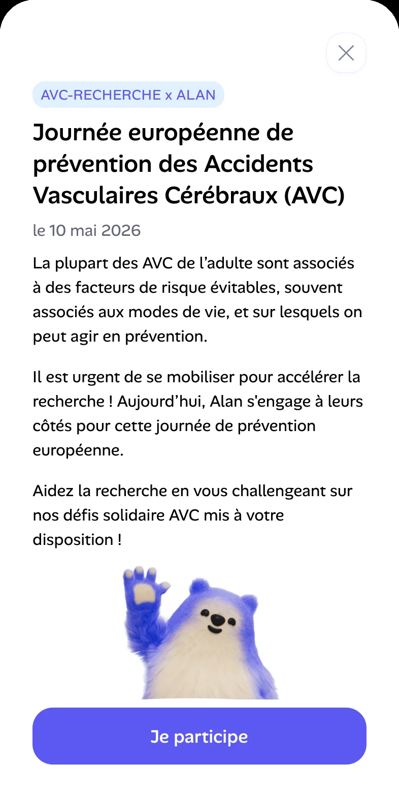
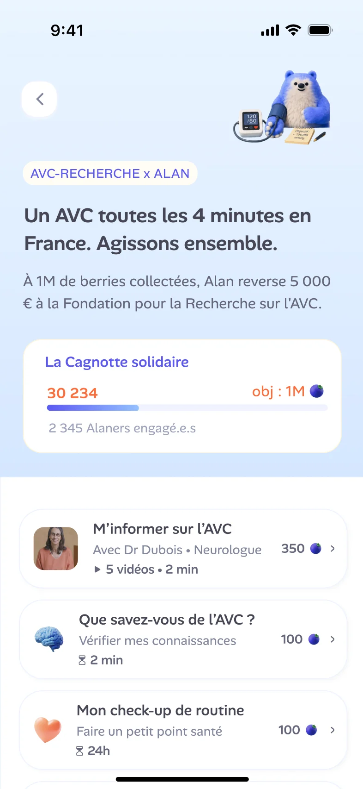
Comment offrir une meilleure prévention et un meilleur suivi des échéances médicales à venir ?
Rappels dentiste, dépistages, vaccins…
Aborder des sujets sérieux de façon suffisamment sérieuse, sans perdre le ton léger et rassurant de la marque.
Pour concevoir nos solutions, nous nous sommes inspirés d’apps de santé, de rendez-vous et de suivi d’objectifs, avant d’idéer ensemble au tableau blanc.
Benchmark
Idéation & user flow
Prototype V1
Tests & restitution
Prototype V2 final
Aussi étudiés : Google Fit, Clue, Respirelax, Headspace, l’app Santé d’iOS.
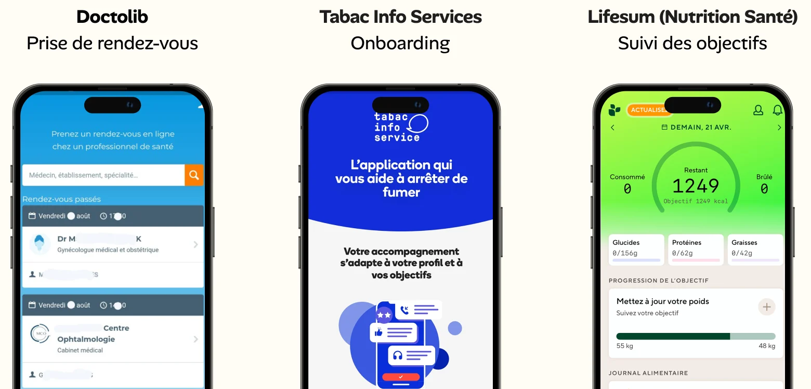
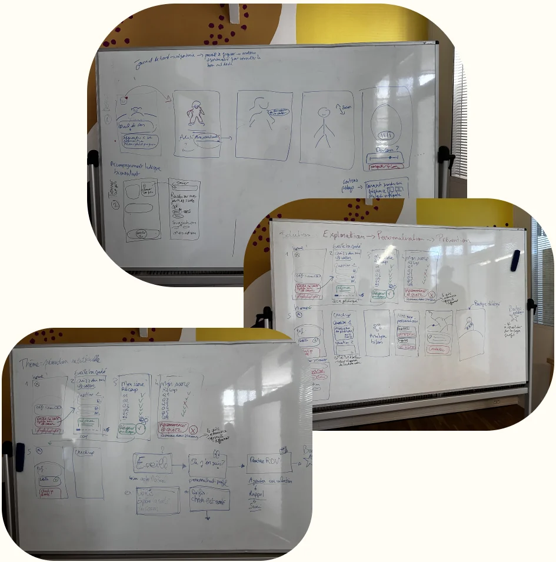
Plusieurs sessions au tableau blanc pour poser un fil conducteur : exploration, personnalisation, prévention. Un quiz pour s’informer, un check-up pour personnaliser, des rappels pour passer à l’action.
De l’accueil au badge débloqué, en passant par le détail d’un défi, « prendre rendez-vous » ou « me le rappeler plus tard », et la notification push.
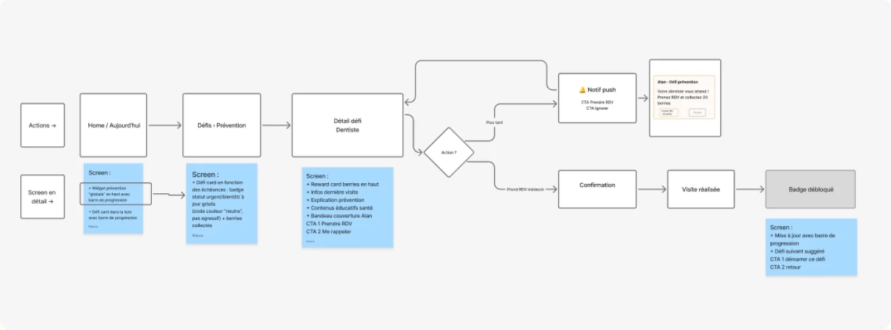
Notre V1, « Minute santé », enchaînait un quiz de 4 questions sur les bons gestes face à la grippe, un check-up personnalisé, puis un score et un badge prévention. Avant d’aller plus loin, nous l’avons confrontée à de vrais utilisateurs.
Le check-up est jugé trop intrusif.
Pourquoi ?Ils se méfient de la gamification en santé.
Pourquoi ?Le nom « Minute santé » n’annonce pas un quiz.
Pourquoi ?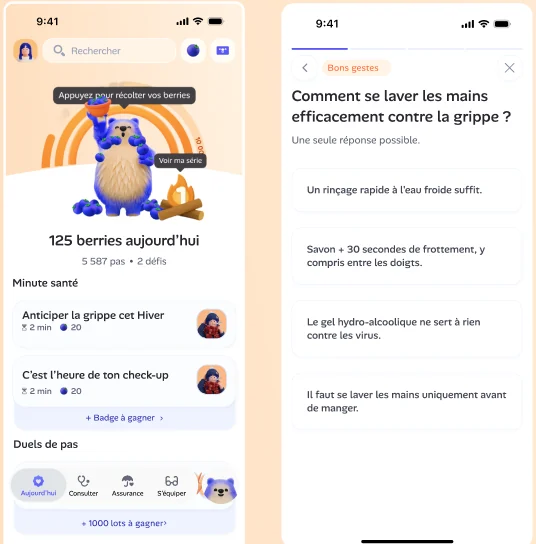
Version 1jugent le parcours fluide, simple et cohérent avec l’app Alan.
trouvent les réponses enrichies du quiz pertinentes et utiles.
Des défis peu visibles sur l’accueil, un badge prévention dont l’intérêt reste flou, un enchaînement quiz puis check-up trop rapide, l’envie de plus d’animations, des informations santé intéressantes mais insuffisantes.
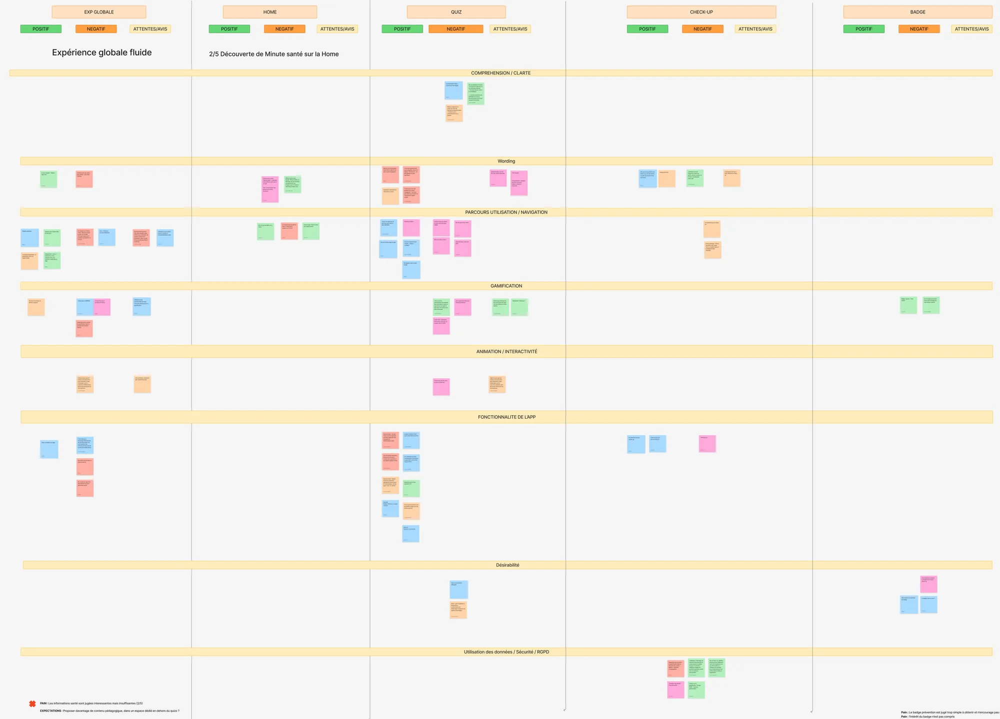
Toutes nos notes, mises en commun dans FigJam, ont été classées par testeur, par zone du parcours (accueil, quiz, check-up, badge) et par nature (positif, négatif, attente).
Une matrice effort / valeur a ensuite fait ressortir le wording comme gain rapide, et la gamification et le check-up comme les chantiers à plus forte valeur.
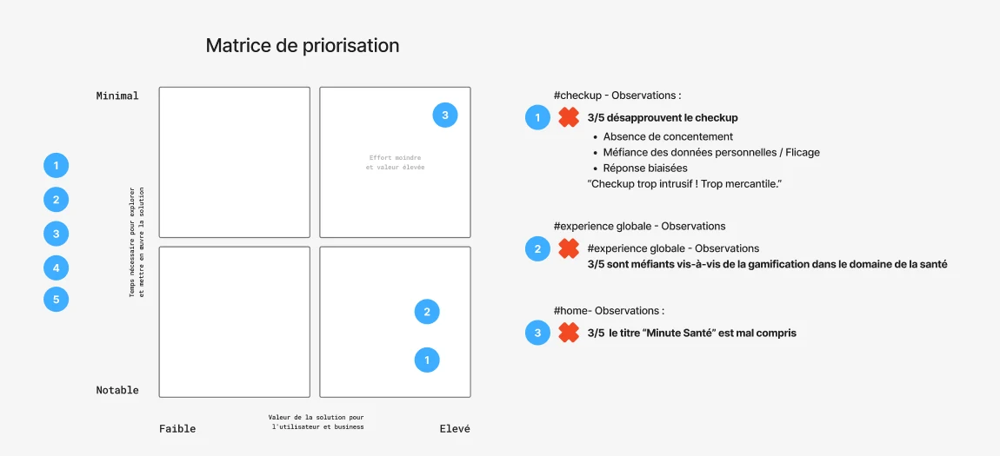
D’une prévention solitaire à une cause commune
L’idée
Associer engagement collectif et suivi personnel, pour transformer la prévention en gestes simples, sensibilisants et durables.
Les principes :
Le 10 mai, journée européenne de prévention de l’AVC : à vos défis !
À 1 million de berries collectées par les membres, Alan reverse 5 000 € à la Fondation pour la Recherche sur l’AVC. Le prototype V2 intègre les trois adaptations issues des tests.
Un thème santé à venir, une carte bien visible sur l’accueil et une cagnotte commune qui montre l’engagement de tous : 2 345 « Alaners » engagés, une jauge qui avance à chaque défi.
Version 2Un ton rééquilibré, de l’humour dans les quiz et les check-ups (« Boire de l’eau, c’est comme… arroser une plante »), du contenu lié à la cause, comme les vidéos d’une neurologue, et des animations. Le check-up explique pourquoi chaque question est posée.
Version 2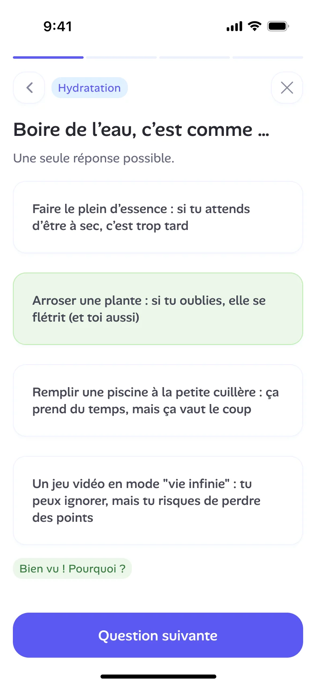
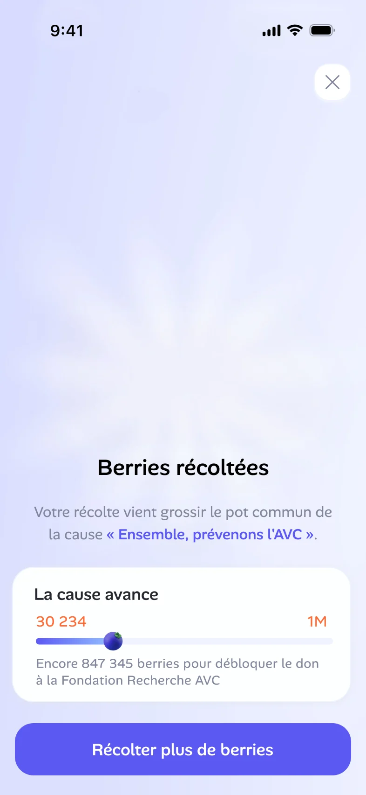
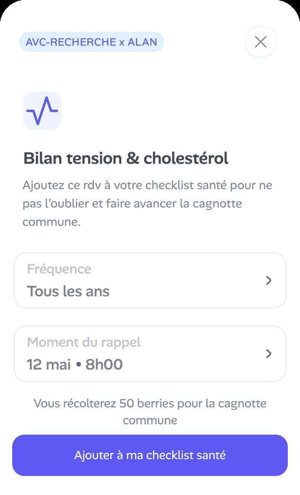
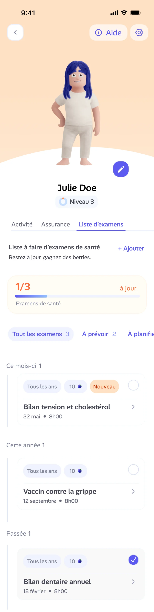
Des bilans santé associés à la cause du moment, une récompense commune à la création d’un rappel, et des rappels qu’on active ou non depuis son profil. Faites défiler l’écran pour voir la liste complète.
Version 2Découvrez tout le parcours mis en place pour répondre à notre problématique :
« Comment offrir une meilleure prévention et un meilleur suivi des échéances médicales à venir ? »
Voir le prototype Figma ↗Le prototype V2 a été présenté le 30 avril 2026. Les critères de succès du brief (LTV, régularité d’usage) se mesurent sur plusieurs mois : ils restent à suivre en conditions réelles.
En santé, la gamification doit servir une cause commune. Le badge individuel n’a pas convaincu, la cagnotte solidaire a été notre réponse à la méfiance exprimée.
Le wording fait partie de l’expérience : un titre mal compris, comme « Minute Santé », suffit à casser un parcours.
Tester tôt une V1 imparfaite nous a évité de peaufiner la mauvaise solution.